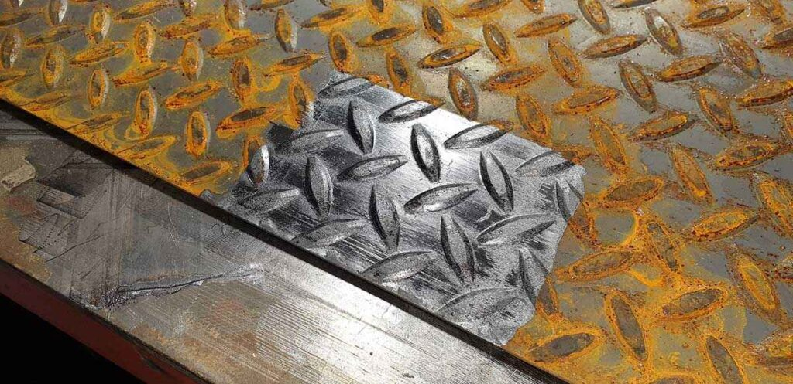

La eliminación de óxido es un desafío constante en múltiples industrias, desde la manufactura hasta la conservación del patrimonio. La limpieza láser se presenta como una solución innovadora y eficiente, capaz de limpiar superficies sin dañarlas ni utilizar químicos nocivos. Este artículo proporciona una visión completa de la limpieza láser de óxido, cubriendo más de 2500 palabras sobre su funcionamiento, beneficios, aplicaciones prácticas y consejos para su implementación.
Introducción
La acumulación de óxido no solo compromete la integridad estructural de los materiales sino que también afecta negativamente su apariencia y funcionalidad. La limpieza láser de óxido ofrece una alternativa avanzada a los métodos convencionales, eliminando eficazmente el óxido sin contacto físico, productos químicos o residuos secundarios.
¿Cómo Funciona la Limpieza Láser de Óxido?
La tecnología láser elimina el óxido mediante pulsos de luz concentrada que vaporizan la oxidación de la superficie de los metales y otros materiales. Esta precisión permite una limpieza detallada sin alterar el material base, preservando su integridad.

Ventajas de la Limpieza Láser para la Eliminación de Óxido
- Precisión y Calidad: Capacidad para limpiar áreas específicas sin dañar las zonas circundantes.
- Rapidez y Eficiencia: Reduce significativamente el tiempo de limpieza comparado con métodos tradicionales.
- Sostenibilidad: Al no requerir químicos ni generar residuos peligrosos, es amigable con el medio ambiente.
- Reducción de Costes: Menor necesidad de consumibles y fácil integración en líneas de producción automatizadas.
Aplicaciones Industriales
- limpieza de Maquinaria: Revitalización de equipos industriales y herramientas afectadas por el óxido.
- Conservación del Patrimonio: Limpieza de obras metálicas y componentes históricos sin comprometer su valor.
- Sector Naval y Aeronáutico: Mantenimiento de embarcaciones y aeronaves donde la eliminación de óxido es crítica para la seguridad.
Implementación de la Tecnología Láser en la Limpieza de Óxido
La adopción de la limpieza láser requiere una comprensión de los equipos específicos y la capacitación para su manejo seguro y eficaz. La selección del tipo de láser y los parámetros operativos dependerá del tipo de óxido, el material afectado y el grado de precisión requerido.
Desafíos y Consideraciones
Aunque la limpieza láser es altamente efectiva, es importante considerar la inversión inicial en equipos especializados y la necesidad de entrenamiento técnico para los operadores.
Estudios de Caso
Se presentan casos reales donde la limpieza láser de óxido ha proporcionado soluciones efectivas en diferentes sectores, demostrando su versatilidad y beneficios a largo plazo.
Preguntas Frecuentes
¿Es la limpieza láser de óxido segura para todos los tipos de metales?
Sí, cuando se ajustan correctamente los parámetros del láser, la limpieza es segura para una amplia gama de metales, incluyendo acero, aluminio y cobre, entre otros.
¿Puede la limpieza láser de óxido dañar la superficie subyacente?
No, si se emplea correctamente. La tecnología láser permite un control preciso que evita el daño al material base.
¿Cuál es el coste de la limpieza láser de óxido en comparación con métodos tradicionales?
Aunque la inversión inicial en tecnología láser puede ser más alta, los ahorros en tiempo de limpieza, reducción de consumibles y minimización de daños a largo plazo pueden resultar en un coste total más bajo.
Conclusión
La limpieza láser de óxido es una solución avanzada que ofrece numerosas ventajas sobre los métodos tradicionales de eliminación de óxido. Su precisión, eficiencia y sostenibilidad la convierten en una opción preferente para una variedad de aplicaciones industriales y de conservación. Con la continua evolución de la tecnología láser, su accesibilidad y aplicabilidad solo están destinadas a expandirse, marcando el futuro de las prácticas de limpieza y mantenimiento.